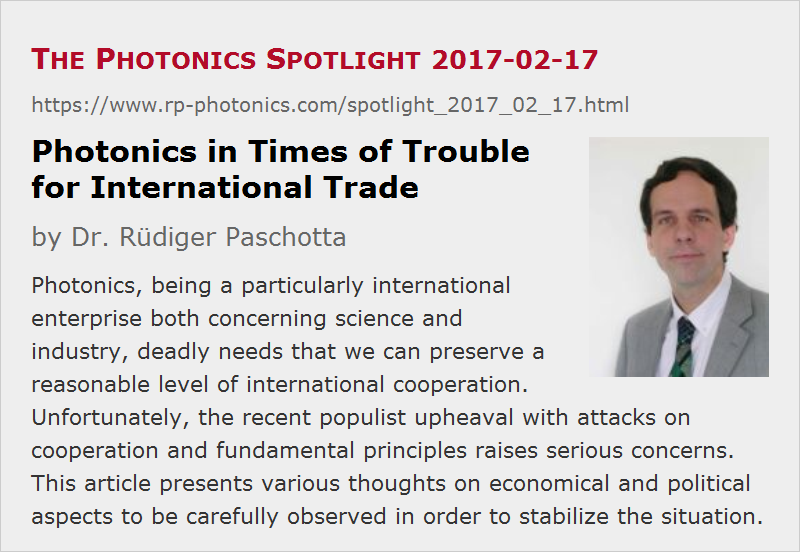

Photonics in Times of Trouble for International Trade
Posted on 2017-02-17 as a part of the Photonics Spotlight (available as e-mail newsletter!)
Permanent link: https://www.rp-photonics.com/spotlight_2017_02_17.html
Author: Dr. Rüdiger Paschotta, RP Photonics Consulting GmbH
Abstract: Photonics, being a particularly international enterprise both concerning science and industry, deadly needs that we can preserve a reasonable level of international cooperation. Unfortunately, the recent populist upheaval with attacks on cooperation and fundamental principles raises serious concerns. This article presents various thoughts on economical and political aspects to be carefully observed in order to stabilize the situation.

Photonics is a business area which is particularly international. Companies of all sizes are interacting – for example, numerous component suppliers in the far east, large and small laser companies worldwide and numerous other companies supporting the development of photonics in many ways. My company RP Photonics is just one example: our business, particularly in the area of simulation software, is totally international, and only a minor proportion of the turnover is done within Germany.
Unfortunately, we may be heading towards major trouble for international trade due to the recent success of populist movements in various countries – most notably in the United States. Of course, with “success” I don't mean success of policies for solving problems (e.g., creating jobs or improving security), but only success in mobilizing political support.
Anyone in photonics – be it in business or science – should be aware of the high importance of preserving a reasonable international cooperation. Especially if protectionist measures would lead into a spiral of measures and countermeasures, i.e., a full-blown trade war, the resulting damage for all of us could be enormous.
Therefore, it is absolutely worthwhile to think carefully about such issues. The first goal must be to properly understand existing problems, already implemented and new suggested policies and their possible impact, and the likelihood of certain conceivable developments. Once this is achieved, one also must consider to speak out, trying to stabilize past achievements and nurturing a basis for further success. Some of our photonics societies have shown signs to start with that.
The German Trade Surplus
For many years, the not so large country Germany has had an enormous trade surplus, i.e., its exports had a substantially higher volume than the imports. This has sparked a lot of criticism – some of it being reasonably founded, some of it being utterly wrong. It even appears to motivate some people to take hostile measures. I try now to usefully discuss some aspects.
First of all, I think it is crucial to take into account that different sectors of the economy contribute to exports or imports on rather different scales and with different reasons. Major export products from Germany are motor vehicles and various machinery, chemicals and pharmaceuticals. The trade surplus largely results from those sectors. In high-tech sectors like photonics, the trade is considerably more balanced; Germany does export a lot of high-power lasers and equipment for laser material processing, for example, but also imports a lot of optical components, measurement devices etc.
Obviously, a trade surplus alone, whether you like it or not, can never be a serious indication for unfair practices. One needs to look at the relevant sectors separately and check them for unfair practices either of the businesses themselves (e.g., concerning exploitation of underpaid workers) or unfair regulations (e.g., concerning taxes or duties) or government subsidies; currency issues can be considered in addition.
German Cars
Looking at vehicles, Germany's most important sector concerning the trade surplus, one can definitely not detect phenomena like dumping and unfairly low wages; in fact, workers' wages in the United States are substantially lower. American consumers certainly don't buy German cars because they were cheaper; in fact, these cars are often even substantially more expensive than American ones. Even though the Euro lost considerable value in terms of US dollars, it is ridiculous to portray the German car industry as an unfair competitor of the American ones, beating those with unfair cost advantages. Obviously, many consumers just find German cars better, e.g. in terms of thorough engineering, and thus by them even at high prices when they can afford that. (Volkswagen's terrible Diesel scandal, which I am very angry about, has of course enormously damaged the reputation of the whole German car industry, but will probably not fundamentally sweep away the reputation of German engineering.) For a long time, the typical American attitude has been to applaud to such success rather than to search for ways of attacking it.
The Meat Industry
The situation is quite different in some other sectors. For example, there is a German meat industry pursuing a mass production based on cheap labor (often from Eastern European immigrants) and little regard for animals rights and ecological issues. This production floods not only Germany and its neighbors with cheap meat, but even various countries of Africa, for example – making it difficult for local farmers to survive. I can well understand that such practices, which are indeed problematic in various ways, raise a lot of criticism from our European neighbors and others – less from the US, where industrialized farming practices on even larger scales and with very low wages are common.
Notably, the problem of that sector is not just that it contributes to the German trade surplus, but rather that it reaches unfairly low production cost by accepting substantial external cost, e.g. in the form of contaminated ground water (causing cost for the society), exploited workers (often even being deprived of the recently introduced minimum wage) and suffering animals. The German government's task would be to work on that external cost problem rather than protecting such industries e.g. against improved EU regulations.
Photonics
Obviously, the situation of the photonic sector is again completely different. There is probably not much of exploitation, since we rather see shortages of skilled workers. There also don't seem to exist any substantial environmental problems, and there's also not a substantial imbalance of trade.
Importantly, however, this does not mean that we, working in photonics, don't need to care about these problems. We can't solve them in our sector, but we could well suffer from them if governments take the wrong decisions.
Coming Dangers
In particular, the US president has already announced to soon introduce very serious import penalties for German cars fabricated outside the US. Moreover, there seem to be serious plans not only in government, but also in Congress to introduce so-called border tax adjustments as an instrument for discriminating imports and favoring exports, having similar effects as a combination of high import tariffs with subsidies for exporters. Quite clearly, such measures would violate WTO rules – the most important rules for the trade worldwide. It seems unlikely that the US government would simply give in when WTO judges the measures to be forbidden under the international treaties; it might instead well ignore the rules and thus trigger a serious erosion of international cooperation in trade. Obviously, the EU, not being able to simply accept such behavior, would have to put countermeasures in place, and those could easily trigger further reactions. The final result of such developments is extremely hard to predict, but must be expected to be disastrous for all of us.
Even if the photonics sector would miraculously be exempt from all direct measures, a general economic or downward trend resulting from a breakdown of international cooperation would certainly not fail to hurt us seriously. More importantly, we also must keep in mind the possibility that the political stability in various countries would inevitably be further endangered in such situations; general experience tells us that getting into serious trouble does not make people more reasonable and cooperative.
Of course, it would be highly unlikely that the above mentioned real problems would ever be solved that way. In order to achieve that, one would clearly have to strengthen rather than to harm international cooperation. For example, Germany should work towards higher environmental standards e.g. concerning agriculture, allowed CO2 emissions of cars, higher minimum wages for more social stability, etc. Such recipes would of course be at least as badly needed for the United States, where CO2 emissions are completely out of control and the social fabric is dissolving in some parts.
Values and Trade – What is More Important?
Excuse me for using a (in my opinion) somewhat silly question as the heading of this paragraph. We currently see developments in the United States (and elsewhere) which include attacks on fundamental values and principles such as
- the independence of the judiciary and the press,
- the prohibition of unfair discrimination e.g. in the form of racism,
- the due respect for all people including the ill and disabled,
- the unanimous rejection of torture as a terribly inhumane and counterproductive instrument,
- the requirement to clearly separate private business issues from government operation, etc.
Some may think that trade issues are peanuts compared with all of that. I fully share the view that those values must be fiercely defended; on the other hand, when serious conflicts over trade arise and lead to a general breakdown of international cooperation, that also threatens to have devastating consequences on many other areas. Imagine, for example, how to solve problems like wars and environmental issues like global warming in a time where international cooperation goes downhill rather than becoming stronger. I believe it is not exaggerated to be afraid of the big crunch – not only economically! – if we really go down that route.
Clearly, the right conclusion for all reasonable people can only be the following: we have to fiercely defend fundamental values, which have been found to be essential for reasonably successful democratic societies, and at the same time have to do all we can to preserve and further develop international cooperation in areas like peace, trade and ecological issues. After all, our future critically depends on both, and the failure in one of the areas can easily have bad consequences spilling over into other areas.
Some may think that the views presented here look overly pessimistic or alarmist – but why exactly? We have very concrete signs that both fundamental values and international cooperation are currently under attack, and there is in my view no reason to believe that this cannot have serious consequences. After all, history tells us that periods of stability and wealth have often ended under similar circumstances; there is no guarantee that the current period will remain reasonably stable if we allow populists to attack various essential achievements.
Certainly, I will continue the business of RP Photonics based on the principles which worked very well so far. For example, I have never regretted to give away an enormous wealth of useful information, particularly in the form of the open-access Encyclopedia of Laser Physics and Technology without getting a direct financial return for that. It is not only that I am delighted to see e.g. of how much help that is for young researchers in developing countries, who are far from getting equal chances. It would also be foolish to think that we could be better off by stopping numerous researchers and industry people from “exploiting” all that information for free. I am aware that competitors may utilize our generous offerings, but I am firmly convinced that cooperation is not just something for “nice people” but rather in many ways the basis of success. Not every person and every business must subscribe to that, but we need to maintain a situation where cooperation is sufficiently widespread to keep the economical and political systems working reasonably well. After all, without sufficient cooperation all will be lost. The typical right-wing recipes – essentially, getting ruthless in order to grasp a larger share of the wealth – are recipes for disaster, not for success.
This article is a posting of the Photonics Spotlight, authored by Dr. Rüdiger Paschotta. You may link to this page and cite it, because its location is permanent. See also the RP Photonics Encyclopedia.
Note that you can also receive the articles in the form of a newsletter or with an RSS feed.
Questions and Comments from Users
Here you can submit questions and comments. As far as they get accepted by the author, they will appear above this paragraph together with the author’s answer. The author will decide on acceptance based on certain criteria. Essentially, the issue must be of sufficiently broad interest.
Please do not enter personal data here; we would otherwise delete it soon. (See also our privacy declaration.) If you wish to receive personal feedback or consultancy from the author, please contact him e.g. via e-mail.
By submitting the information, you give your consent to the potential publication of your inputs on our website according to our rules. (If you later retract your consent, we will delete those inputs.) As your inputs are first reviewed by the author, they may be published with some delay.
|  |
If you like this page, please share the link with your friends and colleagues, e.g. via social media:
These sharing buttons are implemented in a privacy-friendly way!